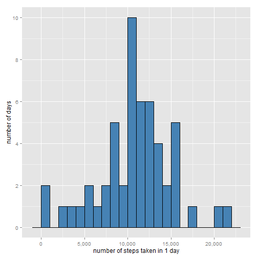
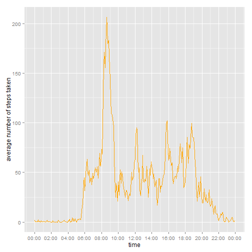
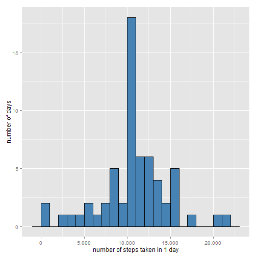
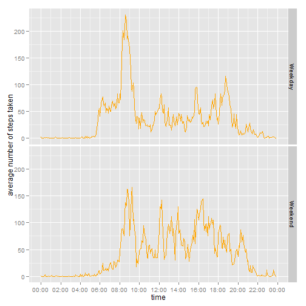

###Loading and preprocessing the data
To start the analysis, the data are read (a csv file),
and then a column "time", based on the "interval" values, is added.
Basically, "5" is translated into "00:05", "10" into "00:10" and so forth.
To do so, the interval-values are padded to the left with zeroes (so "5" becomes "0005"),
and then this gets evaluated as "hh:mm" (so "0005" becomes "00:05").
activity_data<-read.csv("./data/activity.csv")
activity_data$date<-as.Date(activity_data$date)
require(stringr)
activity_data$time<-str_pad(activity_data$interval,4,side="left",pad="0")
activity_data$time<-as.POSIXct(strptime(activity_data$time,"%H%M"))
###Number of steps taken per day
The first graph is a histogram.
Grouped by date, the number of steps taken on each day are summed,
and then plotted in a histogram (binwidth=1000).
require(dplyr)
require(ggplot2)
require(scales)
daily_activity_steps<-activity_data %>% group_by(date) %>% summarise(total=sum(steps))
g<-ggplot(daily_activity_steps, aes(x=total))+geom_histogram(fill="steelblue",colour="black", binwidth=1000)+scale_x_continuous(labels = comma)+scale_y_continuous(breaks= pretty_breaks())
g<-g+xlab("number of steps taken in 1 day")+ylab("number of days")
g

Next, the mean and the median of the number of steps taken per day are calculated.
mean<-format(mean(daily_activity_steps$total, na.rm=T),scientific=FALSE, digits=0,big.mark=",")
median<-format(median(daily_activity_steps$total, na.rm=T), scientific=F, digits=0, big.mark=",")
The mean of the number of steps per day is 10,766;
the median is 10,765.
###Average daily activity pattern
The second graph shows a time series plot of the 5-minute interval (x-axis)
and the average number of steps taken, averaged across all days (y-axis).
require(dplyr)
require(ggplot2)
require(scales)
interval_activity_steps<<-activity_data %>% group_by(time) %>% summarise(average_steps=mean(steps, na.rm=T))
g<-ggplot(interval_activity_steps, aes(time, average_steps, group=1))+ geom_line(colour="orange")+scale_x_datetime(breaks = date_breaks("2 hour"), labels = date_format("%H:%M"))+ylab("average number of steps taken")
g

interval_max <- format(interval_activity_steps[which(interval_activity_steps$average_steps==max(interval_activity_steps$average_steps)),1],"%H:%M")
The interval with the most number of steps per day is 08:35.
###Imputing missing values
Next, missing data is investigated...
numberofNAs <- sum(is.na(activity_data$steps))
numberofNotNAs <- sum(!is.na(activity_data$steps))
The number of missing data is 2304.
missing_data<-activity_data %>% group_by(date) %>% summarise(NA_Count=sum(is.na(steps)))
missing_days<-missing_data[which(missing_data$NA_Count>0),]
library(knitr)
kable(missing_days,'markdown')
##
##
## |date | NA_Count|
## |:----------|--------:|
## |2012-10-01 | 288|
## |2012-10-08 | 288|
## |2012-11-01 | 288|
## |2012-11-04 | 288|
## |2012-11-09 | 288|
## |2012-11-10 | 288|
## |2012-11-14 | 288|
## |2012-11-30 | 288|
As there are 288 5-minute intervals in a day, it is clear there is missing data for 8 (full) days.
(8 x 288 = 2,304)
When replacing the missing data by the average number of steps taken in that interval, a new DF is created.
require(dplyr)
activity_data_imputed<-activity_data %>% group_by(time) %>% mutate(steps = ifelse(is.na(steps), mean(steps, na.rm=TRUE), steps))
To investigate the effect of replacing the missing data, a new histogram is created.
require(dplyr)
require(ggplot2)
require(scales)
all_steps_imputed<-activity_data_imputed %>% group_by(date) %>% summarise(total=sum(steps))
g2<-ggplot(all_steps_imputed, aes(x=total))+geom_histogram(fill="steelblue",colour="black", binwidth=1000)+scale_x_continuous(labels = comma)+scale_y_continuous(breaks= pretty_breaks())
g2<-g2+xlab("number of steps taken in 1 day")+ylab("number of days")
g2

Looking at this new histogram, it is, clearly, very similar to the first one created.
(in fact, only the count of days where the number of steps is between 10,000 and 11,000 is increased (by 8))...
mean_2<-format(mean(all_steps_imputed$total, na.rm=T),scientific=FALSE, digits=0, big.mark=",")
median_2<-format(median(all_steps_imputed$total, na.rm=T),scientific=FALSE, digits=0, big.mark=",")
The mean of the number of steps per day is 10,766 (compare with the original 10,766);
the median is 10,766 (compare with the original 10,765).
The fact that the mean has not changed at all is, of course, not surprising,
given the fact that the missing values were replaced with the average value...
For more on this, see this wikipedia entry)
###Differences in activity patterns between weekdays and weekends
To investigate the difference between weekdays and weekends,
two new columns are added:
1. the first one, "weekday" is just the name of the day
2. the second one, "weekendflag" is a factor with 2 potential values (weekend, or weekday)
Next a panel plot is created (using ggplot with facets), to compare the activity during weekends and weekdays.
require(dplyr)
activity_data_imputed$weekday<-weekdays(activity_data_imputed$date)
activity_data_imputed$weekendflag<-ifelse(activity_data_imputed$weekday=="Saturday" | activity_data_imputed$weekday=="Sunday", "Weekend","Weekday" )
activity_data_imputed$weekendflag<-as.factor(activity_data_imputed$weekendflag)
interval_activity_weekendflag_steps<-activity_data_imputed %>% group_by(time, weekendflag) %>% summarise(average_steps=mean(steps))
g2<-ggplot(interval_activity_weekendflag_steps, aes(time, average_steps, group=1))+ geom_line(colour="orange")+scale_x_datetime(breaks = date_breaks("2 hour"), labels = date_format("%H:%M"))+ylab("average number of steps taken")+facet_grid(weekendflag~.)
g2

As can be expected, the activity in the weekends is not as concentrated in the early morning,
but instead more spread out evenly during the day...